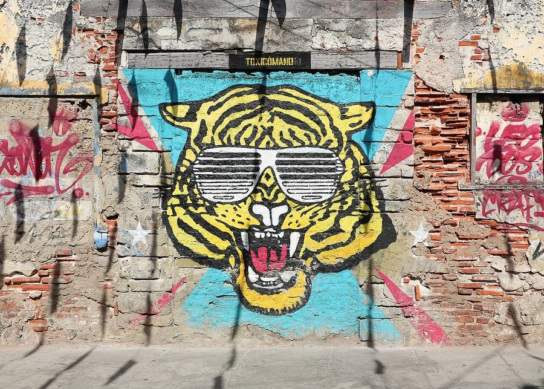
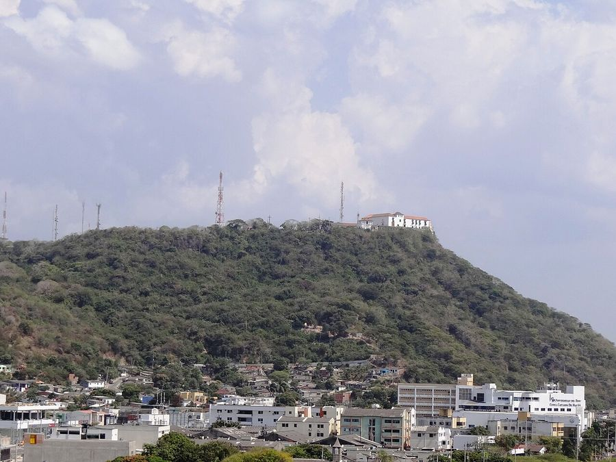
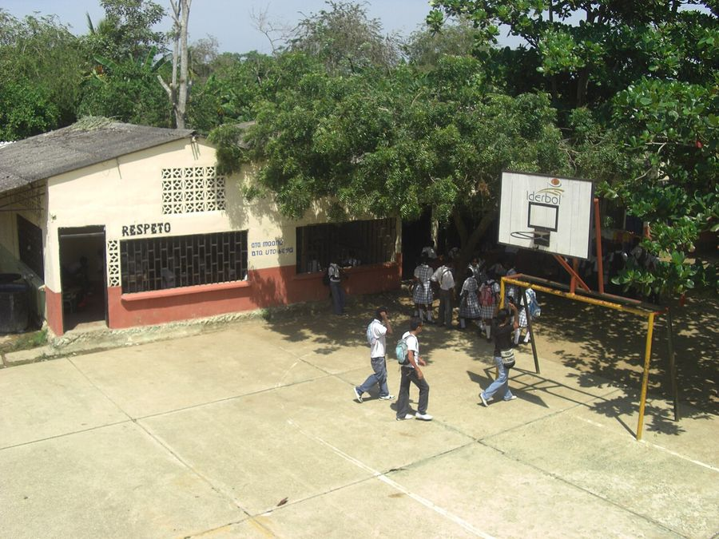

Cartagena
Colombia · 10.4000°N 75.5300°W

Bernard Gagnon · CC BY-SA 4.0
{kind=link}
Make this Notebook Trusted to load map: File -> Trust Notebook
Điểm tham quan
- Phố cổ có tường thành (UNESCO) — Plaza Santo Domingo, Torre del Reloj nearest match was 16,521 km away; not used
- pháo đài Castillo San Felipe de Barajas not found

Getsemaní- Islas del Rosario

Cerro de la Popa- Bảo tàng Vàng Zenú not found

Palenque de San Basilio (UNESCO phi vật thể)
Dệt may & smart textile
- - Cartagena là **cửa khẩu xuất nhập dệt may của Colombia** (hạ tầng cảng + zona franca). - Cụm sản xuất ở **Medellín** — "thủ đô dệt may" Colombia, gốc từ **Coltejer (1907)**; **Inexmoda** tổ chức **Colombiamoda** (hội chợ thời trang lớn nhất Mỹ Latinh, >60.000 lượt trong 3 ngày, 1.700 người mua quốc tế). Thị trường dệt Colombia ước đạt 1,6 tỉ USD vào 2031, >30.000 doanh nghiệp, đang đẩy mạnh tự động hóa và sản xuất bền vững. - Di sản: **sombrero vueltiao** (đan sợi caña flecha, Zenú) và vải thêu San Jacinto ngay gần Cartagena not found